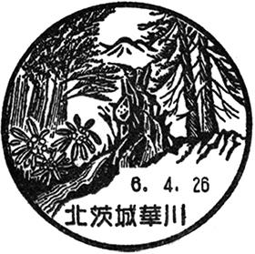
IBARAKI STAMP DIRECTORY
茨城県の風景印・郵便局一覧
茨城の風景や名所を描いた、小さな郵便の印。日本郵便の公式一覧に掲載された219局・224件の風景印を、5つの地域に分けて紹介します。画像や紹介リンクから各郵便局の公式ページを開けます。
風景印地図では、郵便局の位置を見ながら名前や地域で検索できます。通常表示は209局・210件。本一覧は廃止・一時閉鎖や旧図案も含めて掲載しています。
データ確認日：2026-10-05 ／ 日本郵便の公式サイトではない、個人による案内地図です。
県北47局・48件
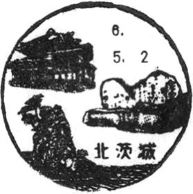
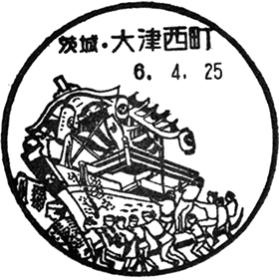
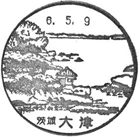
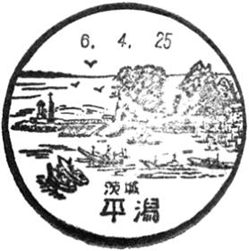
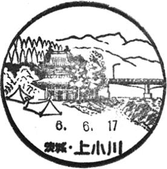
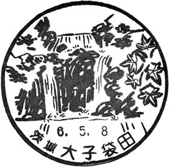
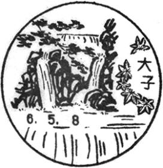
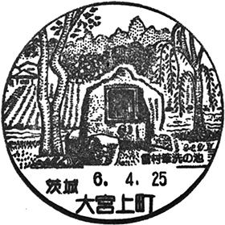
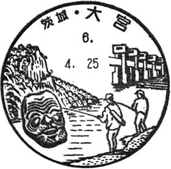
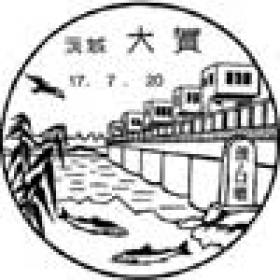
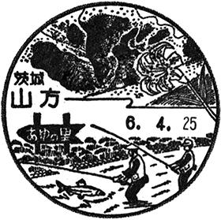
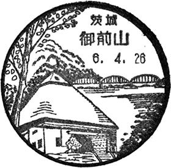
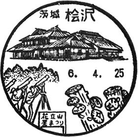
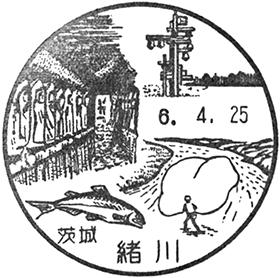
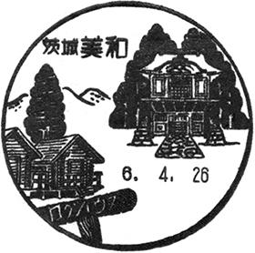
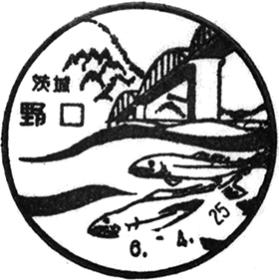
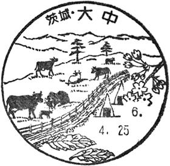
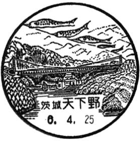
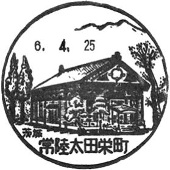
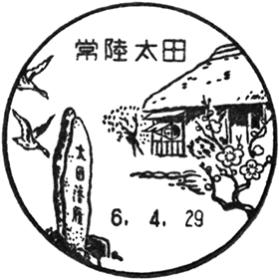
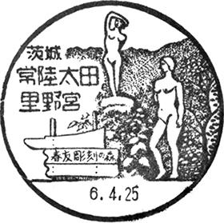
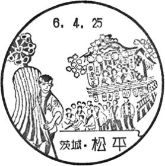
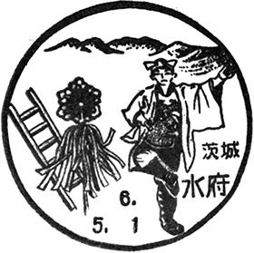
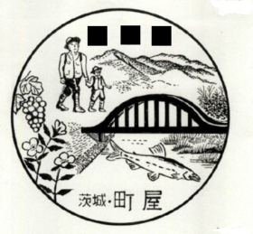
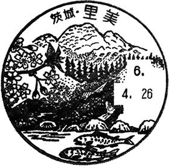
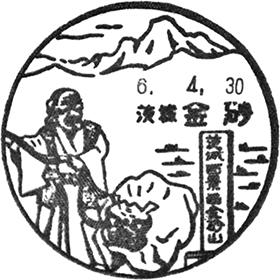
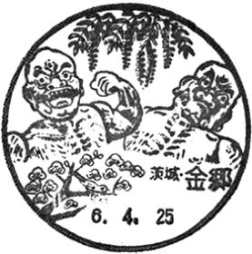
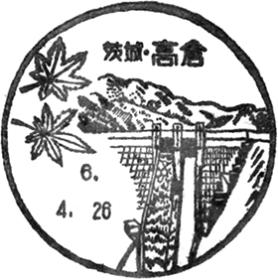
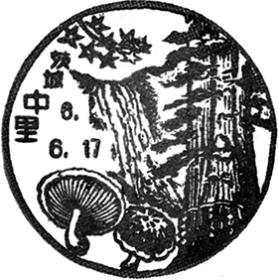
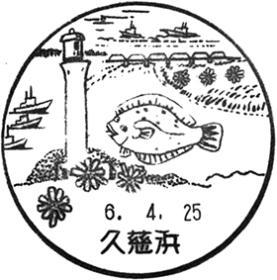
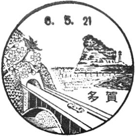
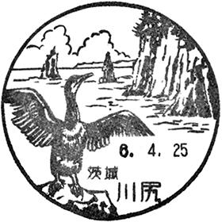
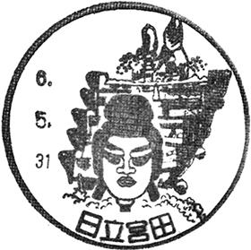
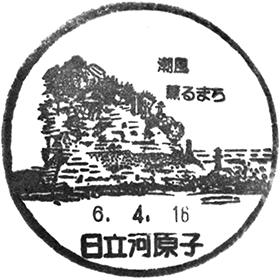
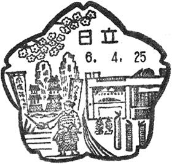
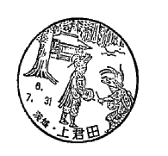
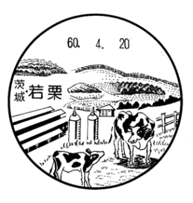
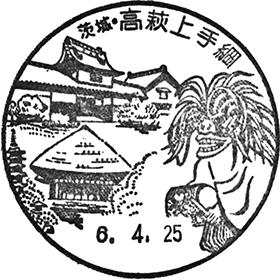
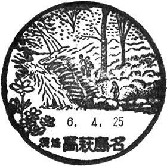
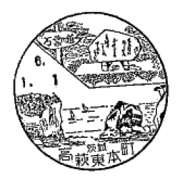
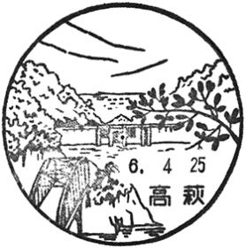
県央71局・73件
鹿行19局・19件
県南39局・39件
県西43局・45件
一覧について
同じ郵便局に複数の掲載がある場合は、画像・紹介ページごとに収録しています。廃止された風景印と一時閉鎖中の郵便局は区別して表示しています。訪問前に最新の取扱状況を日本郵便でご確認ください。
位置は218件を日本郵便の店舗地図、6件を国土地理院の旧局所在地・住所補完で照合しました。大増郵便局と水戸駅前郵便局は旧所在地から補った概算位置です。
出典：日本郵便「茨城県の風景印」。風景印画像等の権利は日本郵便等の権利者に帰属します。